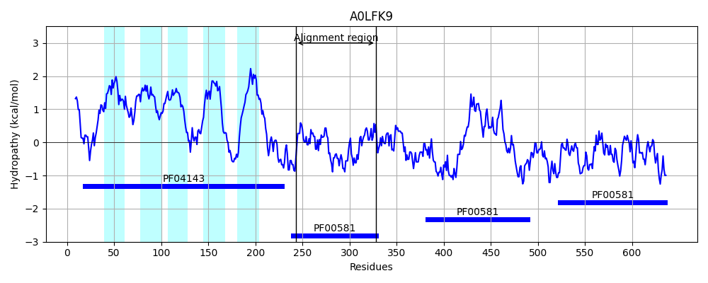

WP_008806855.1
Hit Accession: A0LFK9
Hit TCID: 9.B.102.4.1
Hit Description: gnl|BL_ORD_ID|75 gnl|TC-DB|A0LFK9|9.B.102.4.1 Rhodanese domain protein OS=Syntrophobacter fumaroxidans (strain DSM 10017 / MPOB) GN=Sfum_0511 PE=4 SV=1
Mach Len: 90
e:0.000045
Query TMS Count : 1
Hit TMS Count: 5
TMS-Overlap Score: 0.000000
Predicted Substrates:None
BLAST Alignment:
| Protein Hydropathy Plots: | |
|---|---|
 |  |
Pairwise Alignment-Hydropathy Plot: | |
 | |